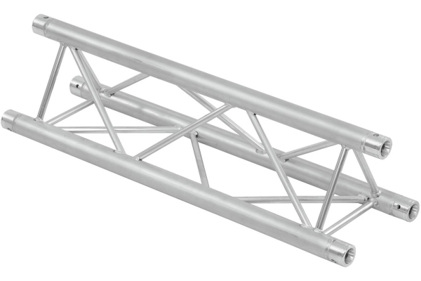
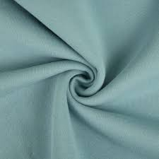
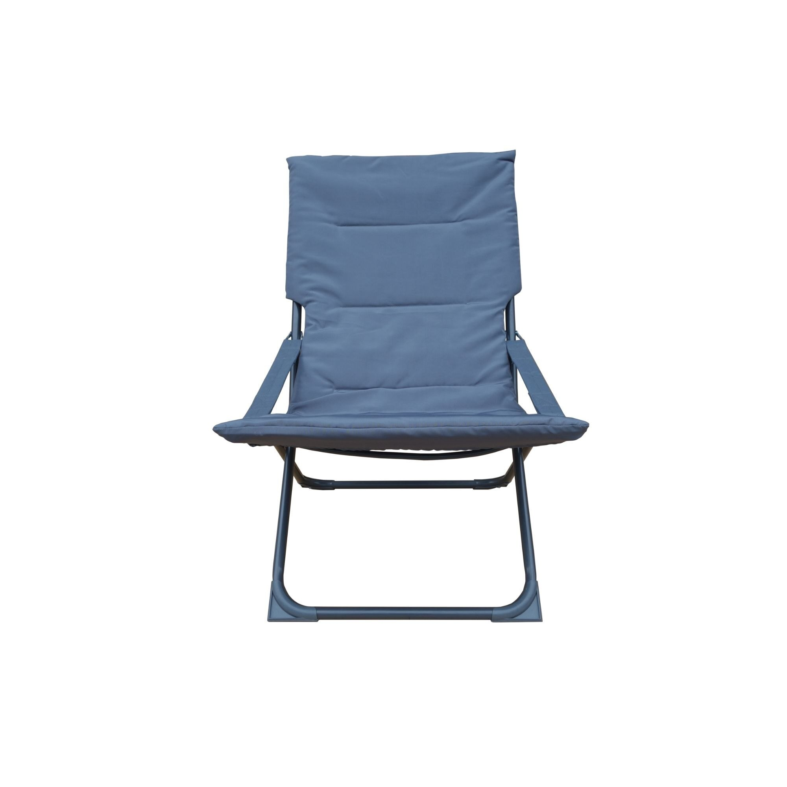

Astronaut Waste
The Martian Waste Challenge
Over the course of a hypothetical three-year mission to Mars and back, a crew of eight astronauts would produce an estimated 12,600 kilograms of inorganic waste. This waste would include a variety of materials such as packaging, clothing and textiles, and structural components used in the spacecraft. Managing such a large amount of trash presents a significant logistical challenge for long-duration space missions. Moreover, returning this waste to Earth for recycling would be extremely costly, both in terms of fuel and resources, making in-situ waste management, reduction, and recycling strategies essential for the sustainability of interplanetary travel.
25,200
Debris Fragments
3K
Objects larger than 10cm
75%
Recyclable

Zotek F30
Type: Non-biodegradable waste
Weight: 1000kg
Note: Must be collected separately
Recycling rate: 2.5%

Aluminum structures
Type: Metallic material
Weight: 900kg
Note: Requires a high melting temperature
Recycling rate: 84%

Textile materials
Type: Non-biodegradable waste
Weight: 1000kg
Note: Must be collected selectively according to material
Recycling rate: 70%
Collection Machinery
Advanced Technologies for Cleaning Mars
We have developed specialized machinery designed to operate in the harsh Martian environment. These innovative systems are capable of processing the three main types of waste generated during extended missions, transforming them into valuable resources for sustainable colonization.
ReAluCraft
Function: Melts aluminum and creates utensils
Autonomy: 6 months
Capacity: 50kg
Efficiency: 80%
Textile Recycling Unit
Function: Makes other clothes and furniture
Autonomy: 2 years
Capacity: 500kg
Efficiency: 95%
Final Products
Transforming Waste into Valuable Resources
Through innovative recycling technologies, we transform Martian debris into useful materials and products for ongoing missions and future colonization efforts. Our closed-loop systems ensure maximum resource utilization with minimal waste.

Utensils
Source Material: Aluminium waste
Process: Melting and refabrication
Application: The daily life of astronauts
Process efficiency: 80%

Textile
Source Material: Textile waste
Process: Fiber restoration
Application: Astronaut apparel
Process efficiency: 65%

Furniture Items
Source Material: Textile and metals waste
Process: Casting
Application: Habitat interior design
Process efficiency: 75%
85%
Waste reduction
40%
Cost savings
100+
Products created